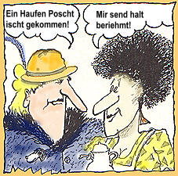
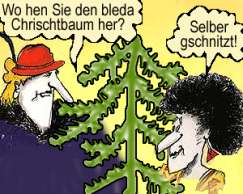
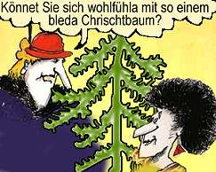
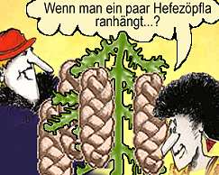
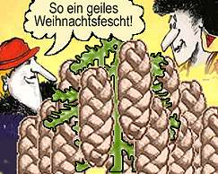

Frau Kächele & Frau Peters
Die Fakten
„Frau Kächele & Frau Peters“ heißt eine Comic-Show, die von Okt. 1986 bis zum Ende von SDR 3 im Aug. 1998 gesendet wurde.

Die wilden „Hefezopf-Weiber“ sind die ersten Kult-Figuren und Imageträger des „Radio für den wilden Süden“ und erschienen pro Woche mit 1 bis 2 neuen Ausgaben. Die Sendeform ist ein Radio-Comic im surrealistischen Umfeld zwischen „Kehrwoche“, süddeutschem Erfinderreichtum und dem unendlichen Verzehr von Hefezopf „mit einem Haufen Butter drin!!!!“ (Original-Slogan).
Die Damen
Frau Kächele & Frau Peters sind zwei süddeutsche Hausfrauen, deren Leben sich rund um den Hefezopf orientiert, denn „der Hefezopf ischt das Geilschte, was es gibt!“.
Das Ende einer Kult-Serie
Die legendäre Radio-Serie „Frau Kächele & Frau Peters“ wurde nach der Fusion von SDR und SWF vom neuen Sender SWR in Baden-Baden trotz Tausender von Bittschriften und Faxe der Fans nicht übernommen, denn „es sind schwäbische Kultfiguren und keine badischen ….“!!!
Insider munkeln: Ein Weiterleben in der SWR-Radiolandschaft wurde erfolgreich verhindert.
Später ging Teflon Fonfara auf die Bühne mit der als Buchlesung getarnten One-Man-Show „Frau Kächele & Frau Peters“.
2011 wurde Teflon Fonfara im Zusammenhang mit dem Konflikt STUTTGART 21 gefragt, ob „Frau Kächele“ auch eine Meinung dazu hätte. Und so kam es zu einem Live-Auftritt bei der Stuttgarter Montags-Demonstration vor dem Bahnhof. An diesem bitterkalten 10. Januar 2011 sprach Frau Kächele vor 7.000 Menschen über Stuttgart 21.
Gitarrenweltrekord 2007
Im Juli 2007 fand der Gitarrenweltrekord statt, bei dem 1.802 Gitarristen den Deep-Purple-Klassiker „Smoke on the water“ spielten. Auf der CD „The Ultimate Smoke On The Water Show“ sind auch Frau Kächele & Frau Peters dabei mit der schwäbischen Version „Smoke überm Backherd“. Man beachte Frau Kächeles wildes Gitarrensolo, zu hören in unserem MP3-Archiv: Hier.
Fakten
Teflon Fonfara schreibt und produziert alle Serien und spricht alle Figuren selbst. In knapp 12 Jahren sind über 800 (!) Folgen in SDR 3 veröffentlicht worden.
Für die Fernsehkamera spielte Teflon Fonfara beide Figuren selbst.
Populäre Erfindungen der beiden Hefezopf-Weiber sind z. B. die „Orgasmusschaukel“ oder das „Kehrwochenfrühwarnsystem“. In Volksmusik-, Rock-, House- und Techno-Songs hört man die kreischenden Radio-Stars auch musikalisch.
Viele Titel sind hörbar in unserem MP3-Archiv: Hier.
Der Kult
1989 wurde über den Hörerkreis von SDR 3 der „Frau Kächele & Frau Peters-Fanclub“ gegründet und es erschien eine Clubzeitung mit gezeichneten Frau Kächele & Frau Peters-Comics. Die Zeitung wurde von Teflon Fonfara verfasst und illustriert. Das Zeitungs-Projekt musste später aus Kosten- und Zeitgründen eingestellt werden. Die damals entstandenen Heft-Ausgaben sind inzwischen Sammlerobjekte und genießen Liebhaberwert wie auch die fast nicht mehr erhältliche LP „Die total schrille Comic Show“ (1989).
Jubiläums-Show
Jedes Jahr im Herbst produzierte Teflon Fonfara für SDR 3 eine „Frau Kächele & Frau Peters-Jubiläums-Show“. In 16-teiligen oder 8-teiligen Folgen wurden Hörer und Hörerinnen im Laufe einer 2-stündigen Sendung mit heftigen Abenteuern und Verfolgungsjagden konfrontiert. Zum 10-jährigen Jubiläum gab es eine Hefezopfparty im Stuttgarter Hauptbahnhof mit Live-Sendung.
Die spektakuläre Radio-Show von 1989
Spektakulär war die Jubiläums-Show 1989 in SDR 3, als die Damen sich vom bösen Magier Uri Geiler den Hefezopf klauen ließen. Sie verfolgten ihn durchs SDR3-Sendegebiet.
Zum Höhepunkt rächte sich Uri Geiler und verbog auf magische Weise den Stuttgarter Fernsehturm.
Dies äußerte sich während der Radiosendung in echten Verkehrsdurchsagen und Tausende von Hörern nahmen das Ereignis ernst, besonders auch, weil an diesem nebligen November-Abend der Fernsehturm nicht mehr sichtbar war. Viele Hörer riefen im Funkhaus und bei der Polizei an und fragten, ob jetzt wirklich der Fernsehturm eingestürzt sei. Wegen der manipulierten Staumeldungen und den damit scheinbar verbundenen Ereignissen in Stuttgart-Degerloch brachen viele auf, um das Ereignis an Ort und Stelle zu erleben. Sogar ein Polizeieinsatzfahrzeug war diesbezüglich unterwegs, um den Vorfall zu prüfen.
Wegen der Auswirkung gab es nächsten Tag in SDR 3 eine Sondersendung mit entsprechender polizeilicher Berichterstattung.
Die Weihnachtsfeier
„Immer wird was gschafft …“ aus „Schwabenpunk“ (LP „Die total schrille Comic-Show“) – zum Anhören gehe in unser MP3-Archiv.



